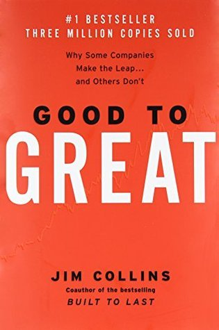

Good to Great
⭐️⭐️⭐️
The applicability of the book is questionable for the average Joe, but the principles could undoubtedly be adjusted for our situations. There were two standouts for me in this book - the first being the Hedgehog principle, or focusing on the things that you can do better than anybody else. The other was putting good people in the areas of greatest potential, not necessarily in the areas of greatest risk.
- Previously: The Goal
- Next: Ender's Shadow